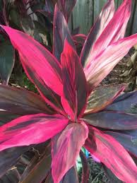
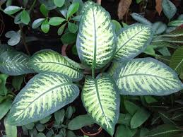

Fuera de su hábitat natural, no suelen sobrepasar el metro de alto. Ver relacionadas
Confundida habitualmente con las drácenas, la caña de indio es una planta majestuosa,
muy utilizada como planta de exterior e interior. En verano, los ejemplares más añejos
de la caña de indio, suelen dar unas flores pequeñitas, pero muy aromáticas y vistosas
de color blanco y rosado.
Diefembaquia

Pueden producir severos casos de inflamación. Ver relacionadas
El caladio puede representar un desafío para quién decida cultivarla.
Sus grandes hojas con forma de corazón y atractivos colores crecen
durante la primavera y el verano, y mueren en otoño, cuando toda
la planta entra en período de dormancia.